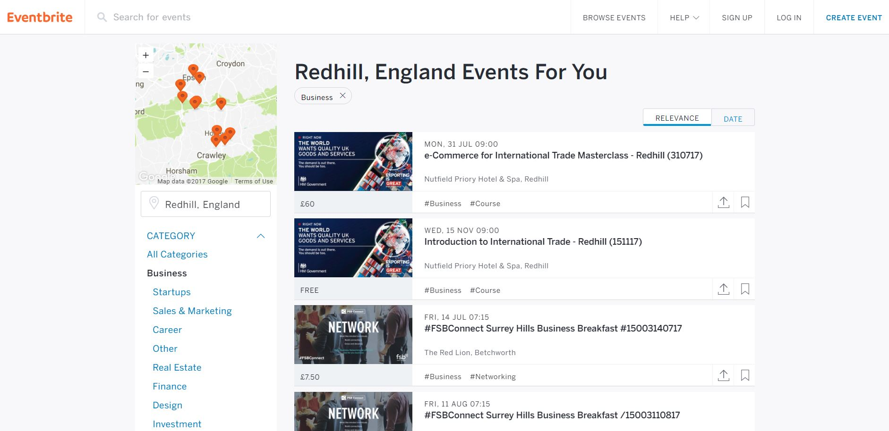
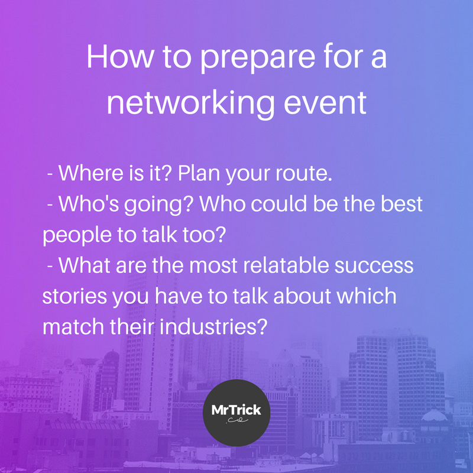

It’s that word again, a word that can make people head for the door and head to the bar in equal measure – networking! We can hear the sound of you cheering from here.
Read any advice article about building your personal brand or scouting for new business and you’ll find networking somewhere on the list.
Now, for some people, networking doesn’t come naturally – it can feel scary to put yourself out there and talk about yourself or your business…
But don’t sweat it; we’ve put together some networking tips, so you can feel more confident about communicating how great your brand is at a networking.
In this guide, we look at where to find networking events, how to prepare for them, what to do once you’re there, and how to effectively follow up.
We’ll also highlight some of the most popular types of networking to help you know what to expect.
What are the Benefits of Networking?
Networking can open up your business to new people and opportunities – which can be turned into paying customers or clients.
Here are a few of the top benefits which make networking well worth investing time in.
Referrals – We already know that referrals are some of the most powerful forms of marketing. “I can put you in touch with [ENTER YOUR NAME], they are one of the best at what they do” speaks volumes about your work, and establishes trust with potential clients right off the bat.
Friends of Friends – It’s not just about the connections you meet on the day. The business owners you meet also know other people who may become your customers or clients.
Branding – Meeting face-to-face solidifies your branding, particularly in the local area. If your business benefits from face-to-face interactions with potential clients, networking is one of the strongest forms of local marketing you can do.
Networking is good for you – It enables you to better understand your local area, your industry, and, you may learn a thing or two which can positively impact your personal development.
Direct Business – I’ve personally made connections which have developed into paying clients, or have been able to introduce me to some.
So now we know the power of networking, a few places you can find brilliant networking events.
Meetingup.com is another popular site which connects people who are similar minded. There are some amazing niches here to explore.
Eventbrite makes it super easy to find paid and free networking events. Search by location and filter down by the type of event you’re looking for.

Your Chamber of Commerce will have networking events. You may need to sign up, but give it a go, it could be well worth it. You can find your local chamber using the drop-down, as shown below.
Don’t forget to check social media too – LinkedIn, Facebook, and Twitter all show off local events too.
How to Prepare for Networking – What should you do before a meeting?
As they say, practice makes perfect.
Networking is very much a skill which can be built on through practice.
However, there are a few nuggets of information I can share with you, to ensure you get the most out of your upcoming networking event. It all starts before you go.
Here’s the deal.
Try to qualify as much information about your meeting before you throw yourself in there.
We’re talking about the location and the people present, and the types of industry which will be represented.
By knowing these, you can prepare a plan to improve your success.

Networking Preparation – Where is it you’re going again?
The location is an easy one – make sure you arrive on time, think about the traffic at that time of day, and have a look at where you could potentially park.
It’s ok to arrive early, it’s not ideal to arrive late.
So now you’ve planned your route (probably using Google Maps – hint hint!). What’s next?
Networking Preparation – Who else is going?
Do some research into the movers and shakers at this event. Try and find some common ground so you’ve got some good networking topics.
Ask yourself questions such as:
Who are the types of businesses that regularly attend this event?
Any reviews about the event from past attendees?
Can you find the names of the people that may be registered/regular attendees or guest speakers and what they do? This will help you to chat to people you’re interested in and provide you with a good idea about what they do and how you might be able to help.
Once you have found a potential network meeting in an appropriate regional area for your business, it’s a great idea to see what else is in the area. There might be other local businesses that are worth popping into after the event to drop off a business card or “leave behind” (leaflets and other printed materials are ideal!). You’re on a networking roll, you may as well go the extra mile.
You’ve arrived *gulp* – what next?
Once you’ve found your destination, make yourself comfortable and grab a drink or something if you can.
Networking – The ‘One-Minute Talk’
Some meetings start off with the ‘one-minute talk’ about yourself, what you do, and a possible quick example of how you’ve transformed another business’s way of working etc.
It sounds scary.
But here’s the good news.
Its gets easier and easier with practice.
So before you go, it helps you to rehearse and time your one minute intro before having to do it.
But wait, I can talk for hours about my business!
Even though it’s your business you’re representing and you think, “of course I will know how to speak about my business” it’s surprising how often you can get caught out or tongue-tied if you haven’t practised what you might say beforehand.
After a while these things become second nature. But make sure you practice if you’ve never done it before.
Prepare your one-minute intro points including:
Who you are
What your business does
Why you do what you do.
If this doesn’t cover a minute it’s a great idea to have a recent success story to bolster your intro pitch.
When you get into a conversation with someone it helps massively to have an easily re-callable short set of responses, and having a couple of case studies under your sleeve is super useful for this.
Try to qualify as much information about your meeting before you throw yourself in there.
Start off by having a good look around and see if you recognise any faces. It’s always nice to warm up by saying hello to people you have met before and then move on to new people.
This helps to get you in the social mindset.
Here’s a big tip:
Almost everyone starts by saying “so, what do you do?”.
This is why it’s good to have a brief introduction ready (remember the one-minute talk you practised earlier?) but, be sure to move on to asking about them and what they do as soon as you can.
Come back to yourself later and never be afraid to ask people if they can see a mutual (or even a one-sided) benefit, that is after all, what you’re there for.
If you’re not nervous, start seeking out those folks you have already targeted from your pre-networking research. You’ll already know a little about them, so getting the conversation started will be a tad easier. If you do not have anyone specifically that you’re there to see then it’s time to dive in.
Joining a conversation that looks already in full flow can be daunting.
I tend to try and find people that aren’t deep in a conversation already but that isn’t always possible. If you do join a conversation then don’t interrupt and overtake the conversation when you arrive – no-one likes a chat-hogger.
The days of the 70’s cocky salesman need to die out as fast as possible, so don’t keep that laughable sales technique alive, just look for space and introduce yourself when prompted or when there is a reasonable dip in the conversation.
The most important thing to remember is to listen.
Understand a person’s business, ask them questions about it and then think about how you/your company might be able to help them or vice versa. The more a person can tell you, the more you can gauge if you’re a good match and could work together.
Practice a few simple but probing questions:
What do you do?
Is it your business?
When did you start your business?
How did you get into what you do?
These sorts of things are usually enough to get a conversation going.
Pay attention to how you may be able to help each other out. For example, if you need more leads, a marketing company might be able to help. If you have too much admin and not enough time, a virtual PA could be the answer. These are the types of opportunities which may benefit you or someone you know.
Here’s another important tip:
You’ll usually end up talking to someone and realise that there is NO mutual benefit for either of you. You know it, they know it, but this leaves you in a difficult position as neither of you wants to be rude and put the brakes on a conversation.
Awkward…
You don’t want to be rude and just leave but also don’t want to lose the precious short time you might have talking to others.
So here’s how you politely end a networking conversation:
First, remember that everyone at a networking event is there for the same reason, to make connections. The type of connection doesn’t really matter, it may be personal or business and it may not even be of direct interest immediately but how you conduct yourself is a representation of you and your business.
Second, have some phrases to hand to help you politely end a networking conversation.
My favourite is just, to be honest, and say “it was great to meet you but I better do some more circling” Or “thanks for talking to me and if I chat to anyone I think you could help, I will point them in your direction”.
These phrases are too the point, honest, and not overly rude.
Networking Conversation Tips
Keep the conversation positive: When you’re chatting with someone and there’s a mutual benefit, directly or indirectly, keep the conversation positive. I’ve found that positive emotional responses are actually better than technical ones for me.
Could they help someone else you already know? Often an opportunity arises to make a connection with someone else you know. (I only try and recommend people that I actually trust and know. If I’m not sure about someone’s work, I would always be honest about that).
Schedule a meeting: I always try and end a positive conversation with a potential catch up/meeting date, so that it becomes more solidified before you leave. Don’t get me wrong, if you don’t like someone or find their ethics, let’s say “questionable”, leave that conversation any way you like.
Names, name, names: Try and make a mental note of someone’s name but don’t get too worried about remembering everybody’s. Always mention your name and repeat their name (and company where applicable) throughout the conversation. This will help cement it in your mind and hopefully, they’ll remember you too.
Post Networking Tips – When you’re back at the office…
Well done, you survived! Now what?
“It’s often said that networking is where the conversation begins, not ends” – Colleen Debaise
Here’s a quick checklist:
Have you emailed everyone? I like to email everyone that I have met just to say thanks for chatting, this helps to forge a better connection.
Have you introduced them to your network? I also try and introduce mutual people that I think may be of benefit to each other.
Have you filed their business card? Keep everyone’s business card somewhere safe for potential future use.
Have you connected on social media? Connect on social media too…LinkedIn is perfect for this! (Here’s mine, if you’re interested)
Final Thoughts
Networking is about the quality of relationships you build. So stay engaged when speaking to people and don’t stress too much about working the entire room. Set yourself a target of giving out 20 business cards (with decent conversations of course!) and you’ll be on to a winning couple of hours.
Most of all, prepare your talking points, take a notebook, pen and plenty of business cards and actually enjoy the experience of meeting new people and learning about other businesses. If all else, you’ll be improving your networking skills, which is always worth doing.
Bonus – Networking locally
Spreading your brand across a few social media platforms can be a godsend for your start-up in the early stages.
When you’re trying to build your brand locally, social media allows you to see what’s going on in your area, chat to local businesses, create relevant content and target potential customers and clients with your awesomeness.
Most areas have Twitter networking hours as well which you can segment by sector or location.
You can get to know other small businesses and have a friendly get together online; the hashtag #SurreyChat is a good one on Saturday from 9 – 10 am.
You can raise awareness and increase your exposure, which could lead to partnerships and real-time networking events and meetings.
Contributing to online communities where you can join debates to do with your industry and find like-minded customers and start-up owners can improve your knowledge and it keeps you in the know.
Events can help you to build relationships with future clients or create some opportunities where you can work with other businesses, for example, you might be a new bar that wants to work with local breweries. Swapping contact details and following each other on social media platforms is a good next step.
The personal touch and rapport you can build with people you meet can’t be replicated through social media though. There are loads of casual, informal networking events for local businesses these days where you can go for a drink and a chat with others. You can often find out about them through social media.
You can learn loads about your start-up’s sector and local area from other business owners, so be actively interested in what they’ve got to say. The key to good networking is listening to others.
Going to talks and seminars to do with your industry is also a great way to network. You can learn something new and find some like-minded people to discuss ideas with.
There are of course lots of formal networking events too, where you can put some marketing collateral together and get some serious business chat on the go. Your local Chamber of Commerce should be able to help you find organised business events.
Set up your own networking groups if you’re struggling to find any, it could be the start of something beautiful! Organising something fun and casual is a good way to attract some attention; a pub-style networking event always goes down a treat because it’s in a no-pressure, comfortable environment…and there’s food and drink, yum.
Or you could get more unorthodox and combine networking with another interest; like a network and jog, or network and 5-a-side – something that can help people to get to know each other and discuss business.
Life is one big Network
There are ample opportunities to network in your day to day life.
When it’s appropriate, you can network with anyone…it’s all about building relationships.
Social media can help to introduce you to new customers and fellow business owners, which can lead to meet-ups…and it works vice versa too.
Be open, inclusive and able to tell people about your brand and what makes you special.
Stay up to date with the latest marketing, web design, and branding tips and news.
Thanks. Welcome aboard!
Oops! Something went wrong while submitting the form.
By clicking “Accept All Cookies”, you agree to the storing of cookies on your device to enhance site navigation, analyze site usage, and assist in our marketing efforts. View our Privacy Policy for more information.